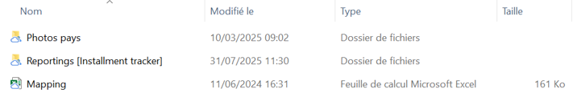
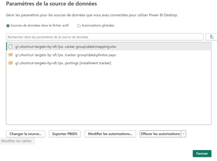
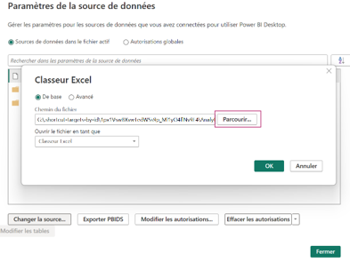
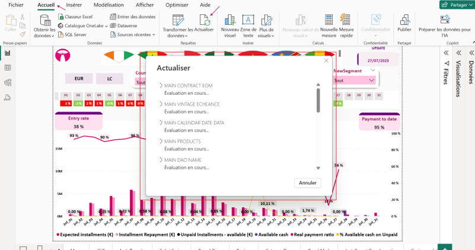

Mise à jour du modèle
Guide étape par étape pour mettre à jour l'Installment Tracker avec les nouvelles données. Suivez chaque étape attentivement pour assurer une mise à jour réussie.
Structure du dossier de données
Dans un dossier nommé "data", assurez-vous d'avoir les 3 différentes sources de données suivantes :
- Dossier des reportings CSV : contenant les 14 fichiers CSV (7 pays × 2 dates : fin du mois précédent + date du jour)
- Fichier Mapping.xlsx : fichier de correspondance pour le mapping des données
- Dossier Photos pays : contenant les pictos de drapeaux des 7 filiales

Best Practices - Règles importantes
- Ne jamais modifier les noms de fichiers
- Ne jamais modifier les noms de feuilles Excel
- Ne jamais modifier l'ordre des colonnes
- Ces modifications pourraient altérer les requêtes Power Query et provoquer des erreurs de chargement
Information importante
Cette étape est à faire uniquement la première fois que vous actualisez le modèle sur votre PC.
Les fois suivantes, passez directement à l'étape 3.
Ouvrir le fichier Power BI
- Localisez le fichier Installment Tracker Group.pbix
- Ouvrez-le avec Power BI Desktop

Accéder aux paramètres de source de données
Dans Power BI Desktop :
- Naviguez vers Accueil > Transformer les données > Paramètres de la source de données

Mettre à jour les 3 sources
Vous verrez apparaître 3 sources à mettre à jour :
- Le dossier des reportings CSV
- Le fichier Mapping.xlsx
- Le dossier Photos pays
Pour chaque source :
- Cliquez sur la ligne correspondante
- Cliquez sur Changer la source
- Cliquez sur Parcourir
- Naviguez jusqu'à la source respective sur votre PC
- Cliquez sur OK

Best Practices - Respecter les types
- Ne pas remplacer un fichier par un dossier, ou l'inverse
- Bien respecter le type : folder → folder, file → file
- Dossier des CSV → doit pointer vers un dossier
- Mapping.xlsx → doit pointer vers un fichier
- Photos pays → doit pointer vers un dossier
Lancer l'actualisation
Dans Power BI Desktop :
- Allez dans l'onglet Accueil
- Cliquez sur le bouton Actualiser

Temps de chargement
Le processus d'actualisation peut prendre du temps :
- Durée estimée : entre 30 minutes et 1 heure
- La durée dépend des performances de votre machine
- Une barre de progression indique l'avancement
- Une fois terminé, Power BI affiche un message de confirmation
Points d'attention pendant l'actualisation
- Ne fermez pas Power BI Desktop pendant le processus
- Ne mettez pas votre ordinateur en veille
- Patientez jusqu'à la fin complète du chargement
- Si des erreurs apparaissent, notez-les pour investigation
Confirmation de réussite
L'actualisation est terminée lorsque :
- Le message "Actualisation terminée" s'affiche
- La barre de progression disparaît
- Aucune erreur n'est signalée
- Les visuels se mettent à jour avec les nouvelles données

Vérifications post-actualisation
Après l'actualisation, effectuez les vérifications suivantes pour vous assurer que tout fonctionne correctement :
1. Vérifier l'affichage des visuels
- Parcourez tous les onglets du rapport (GLP, Installments, Benchmark, etc.)
- Vérifiez que tous les visuels s'affichent correctement
- Assurez-vous qu'aucun visuel ne montre d'erreur ou de valeur aberrante
- Contrôlez que les graphiques contiennent bien des données

2. Sélectionner la période courante
Important : Configurez les filtres pour afficher les données du mois courant :
- Allez dans les filtres de page (panneau de droite)
- Localisez le filtre Year-MonthDay
- Sélectionnez le mois courant
- Appliquez le filtre à toutes les pages du rapport

3. Checklist de validation
- Les données correspondent bien à la période attendue
- Les montants sont cohérents avec les sources
- Les KPI cards affichent les bonnes valeurs
- Les courbes et barres suivent la logique métier
- Les matrices (BranchDesc, Region, CategoryDesc) sont correctement colorées
- Le tableau Customer details contient les bons contrats
- Les filtres de segment/pays/agence fonctionnent
4. Enregistrer et publier
Une fois toutes les vérifications effectuées :
- Enregistrez le fichier Power BI (Ctrl + S)
- Allez dans Accueil > Publier
- Sélectionnez votre espace de travail Power BI Service
- Attendez la confirmation de publication
- Ouvrez le rapport dans Power BI Service pour vérifier la version en ligne

Félicitations !
✅ La mise à jour de l'Installment Tracker est terminée avec succès.
Le rapport est maintenant à jour avec les dernières données et disponible pour tous les utilisateurs.